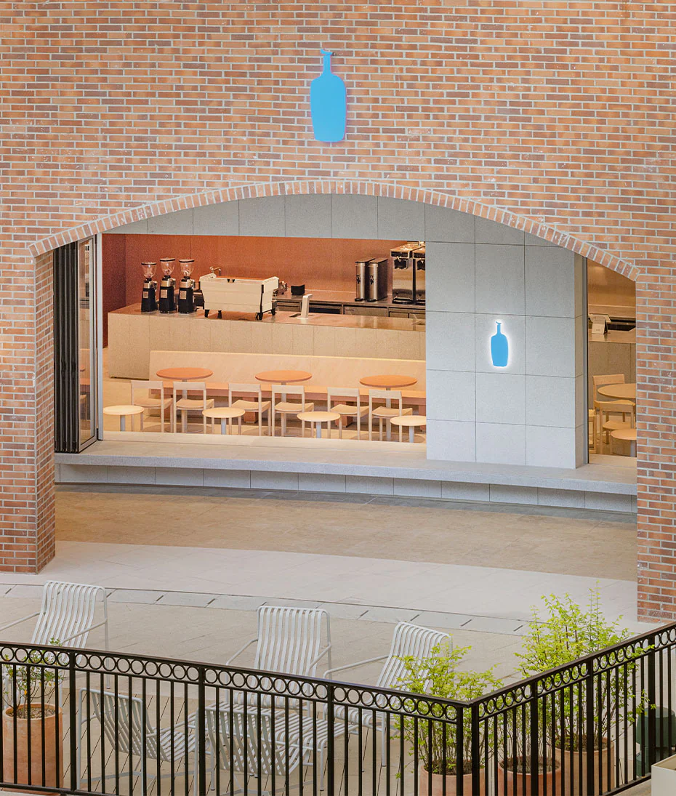

푸어 오버 키트 소개
- 커피 드리퍼
- 최상의 푸어 오버를 위해 탄생한 정교한 디자인과 기능
- 커피 카라페
- 드리퍼와 함께 편리하게 사용할 수 있는 디자인과 사이즈
- 커피 필터
- 블루보틀의 노하우를 담은 독창적 디자인의 필터
푸어 오버 키트 보기
라이프 스타일 제품
- 런치백
- 아폴리스와의 협업으로 탄생한 토트백
- 핸드 케어 세트
- 시낭과의 협업으로 탄생한 핸드 크림과 스크럽
- 엠브로이더리 에코 백 미니
- 볼앤체인과 블루보틀 커피가 협업한 에코백
라이프 스타일 보기

블루보틀 부산 기장 카페
가까운 블루보틀 카페를 확인해보세요
카페 찾기